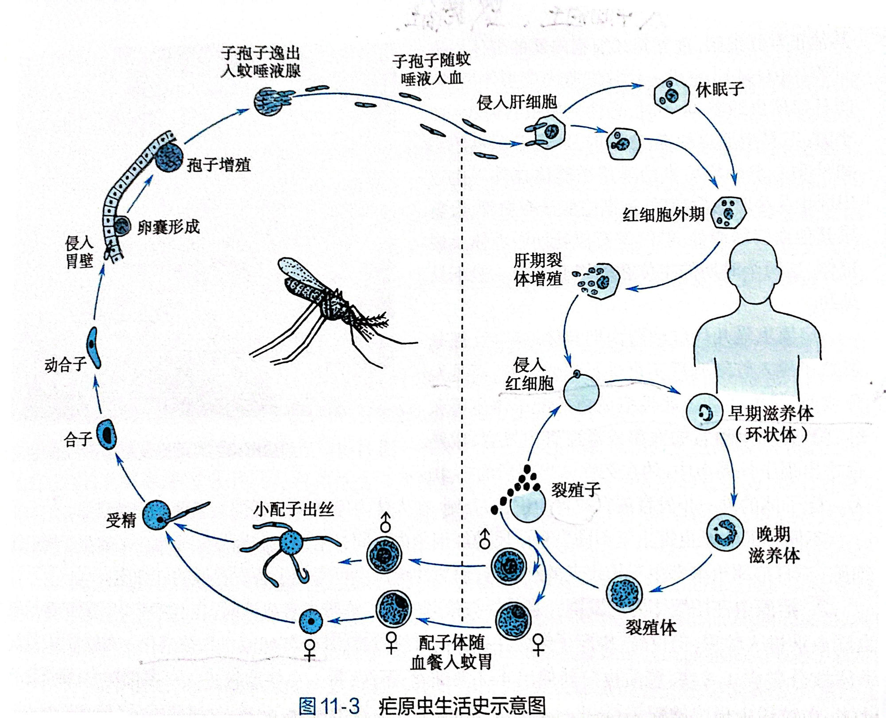

雌性按蚊
叮咬时可将感染性子孢子带入人体。
FIELD GUIDE / 01 PARASITOLOGY
一段发生在蚊子与人体之间的生命旅程。用几分钟，认识疟原虫如何传播、发育，以及我们怎样保护自己。
疟原虫（Plasmodium）会在人体和按蚊之间完成复杂的生命周期。进入人体后，它先到肝脏，再感染红细胞；红细胞受损与破裂会引发疾病表现。
疟疾主要由受感染的雌性按蚊叮咬传播。日常接触、握手或共餐不会传播疟疾。
叮咬时可将感染性子孢子带入人体。
疟原虫在人体内经历不同发育阶段。
及时检测并遵医嘱治疗，可降低重症风险。
点选任一阶段，沿着课件中的生活史图，从人体肝脏与血液，一路追踪到雌按蚊体内。
受感染的雌性按蚊吸血时，唾液中的子孢子进入人体血液，并很快到达肝脏。疟疾也可通过输血等少见途径传播。
肝细胞与红细胞内进行裂体增殖；部分虫体分化为雌、雄配子体。
配子形成并受精；随后孢子增殖，子孢子迁至唾液腺。
宿主小知识 人是中间宿主；有性生殖发生在按蚊体内，因此按蚊是终宿主。
* 间日疟原虫和卵形疟原虫可在肝脏形成休眠子，之后再次活化并导致复发；原图为教学示意，非按比例绘制。

感染后的病程和重症风险因种类而异。选择名称查看简要提示。
可导致严重疟疾，是重症和死亡的重要原因之一。出现疑似症状应尽快接受检测与专业治疗。
Plasmodium falciparum疟疾潜伏期和表现可能不同。若曾到疟疾流行地区，即使回国一段时间后发热，也应主动告知医生旅行史。
发热、寒战、出汗，也可能伴有头痛、乏力、肌肉酸痛、恶心等。
部分患者会反复出现发冷、发热、出汗的发作，但早期不一定规律或典型。
意识模糊、抽搐、呼吸困难、黄疸或极度虚弱等情况，应立即急诊。
及时检查很关键医生可通过血涂片镜检或快速诊断检测等方法判断；必要时进一步检查。
不自行用药目前预防重点是减少蚊虫叮咬，并根据目的地和个人情况咨询专业人员。
穿长袖上衣和长裤；按产品说明使用适合的驱蚊剂。
使用蚊帐，优先选择有纱窗或空调的住宿环境。
提前咨询旅行医学或医疗专业人员，了解目的地风险及是否需要预防用药。
旅行归来后发热？尽快就医，并主动说明去过哪里、何时返回。及时告知旅行史，能帮助医生尽早安排疟疾检测。
查看症状提示选择一个答案，看看你的判断是否正确。